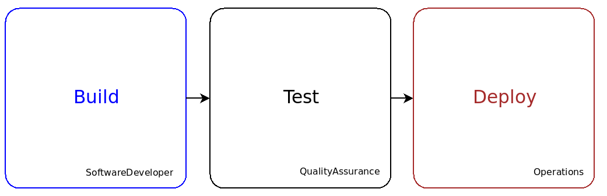
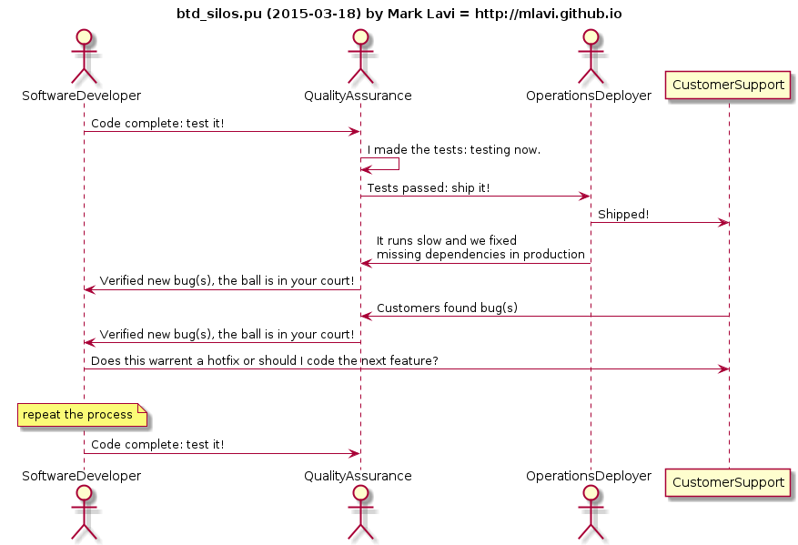
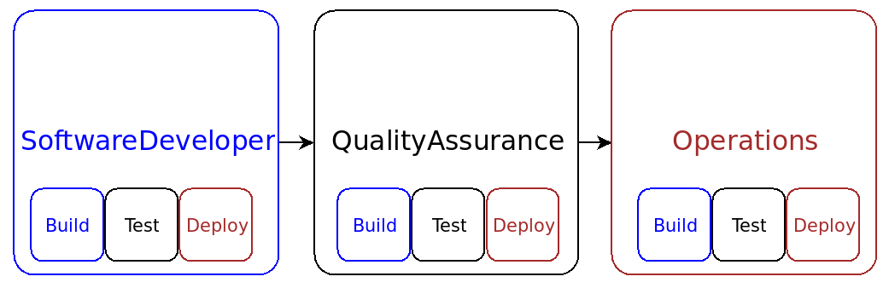

DevOps BTD Pattern for Continuous Deployment
18/Mar 2015
What happens when you find the same macro and micro pattern in your automation diagram? You reinforce your goals to improve code flow and service design on the way to test driven development!
Code Flow and Service Design
I created the DevOps Automation Diagram to map out the flow of code from developer to production in a wholly automated manner: better known as continuous deployment.
This map represents the software development life cycle, service deployment, and feedback loops that are integral to service design. I did this so that I could figure out where best to start work for my infrastructure as code project and I found a few optimizations by re-factoring the code flow and moving processes forward in the chain of events.
In doing so, I describe a journey that spans different disciplines of build, test, and deployment: areas that have been traditionally separated into team or department silos because they represent the pillars or domains of software development, quality assurance, and operations.

Those traditional silos create code friction by introducing manual hand offs and insulating teams from shared responsibilities, creating barriers to proper service design and life cycle considerations.
“It's not my job,” “it works on my laptop,” and “I don't like the [other team's] attitude” are verbal indications of code friction. They are blockers for engineers on any team or any domain to embrace their responsibility for service design over the entire life cycle of code.
BTD: Build, Test, Deploy Pattern
We've talked about breaking down the traditional walls between software development, quality assurance, and operations by describing a responsibility for all of these teams to embrace all of the disciplines of BTD (build, test, and deployment) in order to become proper service designers.
- Build: SoftwareDeveloper codes functionality and builds the code
- Test: QualityAssurance creates tests for the build artifacts
- Deploy: Operations deploys the artifacts
I call this the BTD pattern, but astute readers will note it should be the TBD pattern because we want to achieve test driven development of code, tests, and operations.
BTD is nothing revelatory, it is the traditional pipeline for software development. The DevOps Automation Diagram at a high level is a BTD pattern, but we will examine it further and find that BTD should exist in each domain.
What is wrong with the BTD pattern? Nothing except how it has been implemented as traditional roles and hand-offs, e.g.:

…you can see the traditional silos and you can see all of the potential inefficiencies to remedy a bug. The cost and time to fix increases the further the bug is discovered from the developer.
DevOps BTD Pattern for Continuous Deployment
We need to prevent bugs from happening in deployment, in test, and in development.
- Did operations create a deployment bug? How did they test it?
- Did quality assurance develop a good test? How do you test the tests?
BTD must be applied at the build domain, at the test domain, and at the deploy domain.

This is why everything is testable, buildable, and deployable on the developer laptop in the DevOps Automation Diagram. The traditional software developer or recent college graduate, system administrator, or quality engineer does not code tests, code deployment, and code builds, then test deployments and test builds – but they should! The DevOps engineer must test monitors, deployments, and builds as well. This expanded skill set must be part of the engineering culture for service design and imbued into all.
SoftwareDeveloper codes and performs BTD:
- BDD feature descriptions (with help from product management, customer support, and sales)
- TDD unit test cases + test data (with help from QualityAssurance)
- Build jobs
- Functionality
- Related logs, metrics, and monitors for internal SLAs (with help from Operations)
- Deployable and configurable artifacts (with help from Operations)
QualityAssurance codes and performs BTD:
- Test plan
- Test cases and test data (with help from SoftwareDevelopers) that leverage logs, monitors, and metrics
- Test and periodic test jobs
- Integration tests (with help from SoftwareDevelopers)
- Deployment tests (with help from Operations)
Operations codes and performs BTD:
- Deployment Tools and tests
- Server OS builds, run times, and dependencies
- Configuration Management and tests
- Deployment Orchestration (automated run books) and tests
- Monitors and escalations (which are akin to integration tests)
- Logging and Metric reports (which are akin to service level agreements)
I am sure there is more, but this is a very good start to a robust service design organization for continuous deployment!